每鏡取 12%／50%／90% 位置三張影格（左），規格表（右）。景別、構圖、燈光、產品出鏡與「運鏡（目視）」為人工視覺判讀；產品出鏡面積為目視估計（±10 個百分點）。「運鏡（自動）」為區塊比對結果，僅供對照。
| 影片 | 硬體可見時間占比 | 硬體大面積（≥30%）時間占比 | 時間加權平均畫面占比 | 首次硬體出鏡 | 純 UI／字卡／標誌時間占比 |
|---|---|---|---|---|---|
| Apple · The new MacBook Air with M5（50 秒） | 58% | 29% | 15.7% | 0.0 秒 | 39% |
| ASUS · Zenbook DUO (UX8407)（36 秒） | 70% | 50% | 25.5% | 0.0 秒 | 30% |
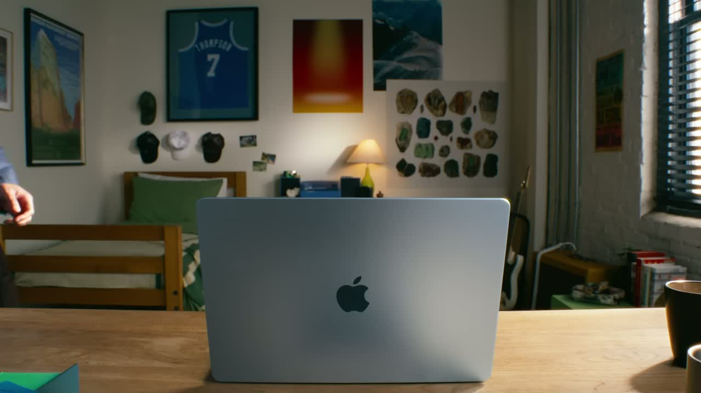
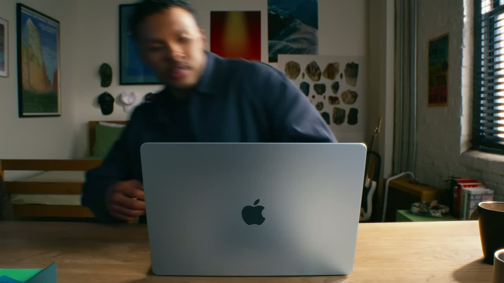
| 景別 | 中遠景→俯拍（MLS→Overhead） |
|---|---|
| 構圖 | 正面置中、對稱；人物在筆電後方，背景臥室造景 |
| 燈光／光線 | 暖色自然光＋室內實用燈，中調、柔和、無硬陰影 |
| 產品出鏡 | 硬體約佔畫面 15%（機蓋 Apple 標誌→俯視鍵盤） |
| 運鏡（目視） | 起重機式弧線／大幅俯仰：由正面平視一路越過筆電到正上方俯拍（目視確認） |
| 運鏡（自動 v2） | push-in/zoom-in + tilt down (fast) 平移 -0.02 · 俯仰 -12.79 · 縮放 3.09 %/s · 內點率 0.62 |
| 量測 | 亮度 74.1 · 對比 RMS 53.6 · 色溫指標 5445K · 飽和 0.432 |
| 備註 | 自動運鏡誤判為「slow drift」；單張中間影格看不出這個運鏡 |
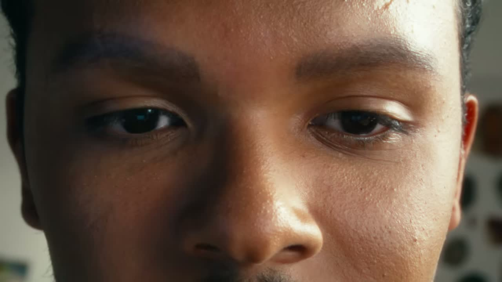
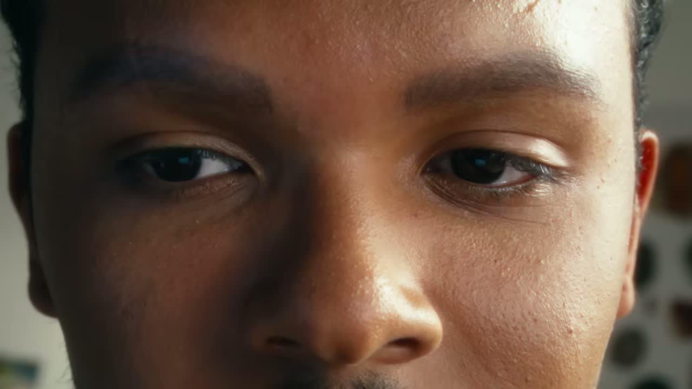
| 景別 | 極特寫（ECU）眼部 |
|---|---|
| 構圖 | 雙眼置於上 1/3，貼臉裁切、淺景深 |
| 燈光／光線 | 暖色柔光，側前方主光，皮膚質感柔和 |
| 產品出鏡 | 無硬體出鏡 |
| 運鏡（目視） | 固定（輕微呼吸感） |
| 運鏡（自動 v2） | static 平移 -2.11 · 俯仰 1.04 · 縮放 0.98 %/s · 內點率 0.98 |
| 量測 | 亮度 86.1 · 對比 RMS 57.8 · 色溫指標 3859K · 飽和 0.394 |
| 備註 | 情緒鏡頭，人物看螢幕 |
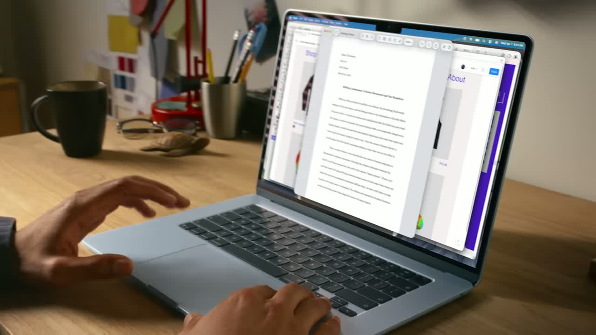
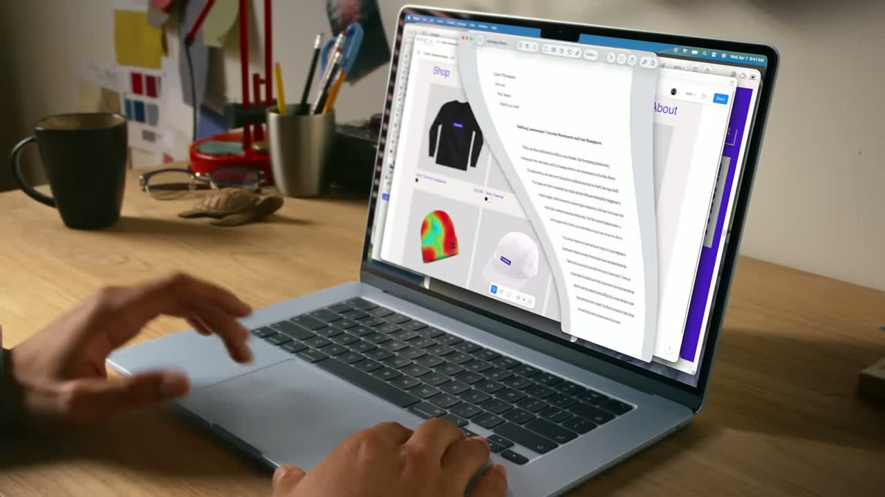
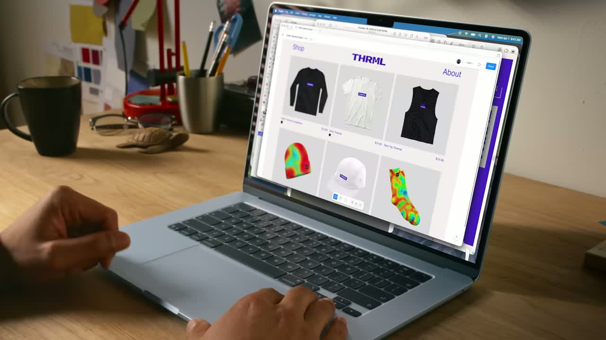
| 景別 | 中近景（MS）3/4 側視筆電 |
|---|---|
| 構圖 | 筆電偏右、手在左下，前景虛化；斜線構圖 |
| 燈光／光線 | 暖色日光，桌面木質反光，中高調 |
| 產品出鏡 | 硬體約佔畫面 35%（螢幕＋鍵盤＋觸控板） |
| 運鏡（目視） | 固定或極輕微手持 |
| 運鏡（自動 v2） | pan right (fast) 平移 -4.83 · 俯仰 -3.71 · 縮放 4.21 %/s · 內點率 0.71 |
| 量測 | 亮度 117.9 · 對比 RMS 72.6 · 色溫指標 5073K · 飽和 0.34 |
| 備註 | 螢幕內容出現頁面翻轉轉場 |
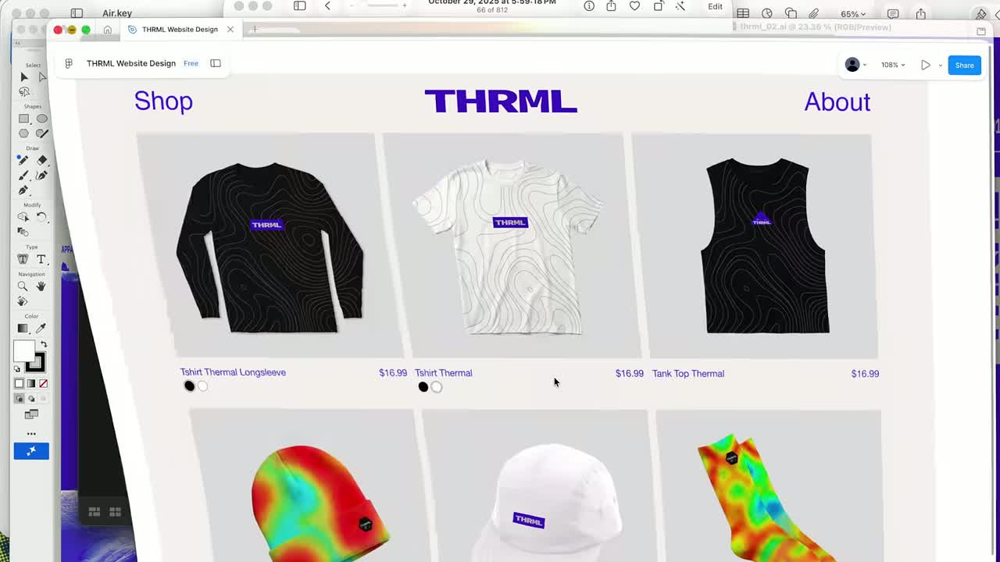
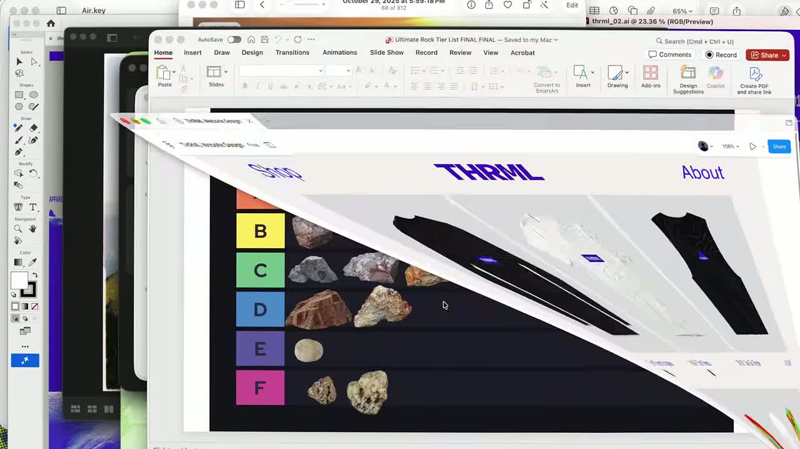
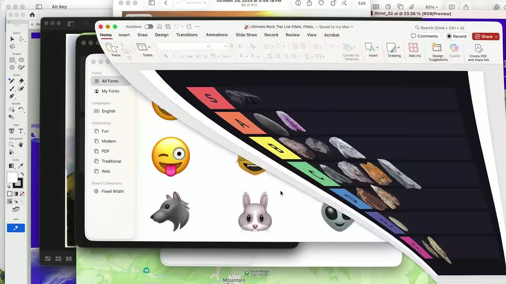
| 景別 | 螢幕錄影滿版（UI） |
|---|---|
| 構圖 | 平面滿版，多視窗疊層翻頁擦除 |
| 燈光／光線 | 螢幕本身（高調、白底） |
| 產品出鏡 | 無硬體出鏡（僅螢幕內容） |
| 運鏡（目視） | 虛擬（動畫擦除） |
| 運鏡（自動 v2） | virtual（螢幕錄影／字卡／標誌，非實體鏡頭） 平移 0.17 · 俯仰 0.05 · 縮放 -0.02 %/s · 內點率 0.44 |
| 量測 | 亮度 162.8 · 對比 RMS 86.4 · 色溫指標 6576K · 飽和 0.12 |
| 備註 | 翻頁式轉場，銜接下一鏡 |
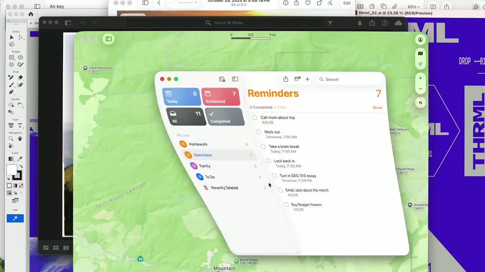
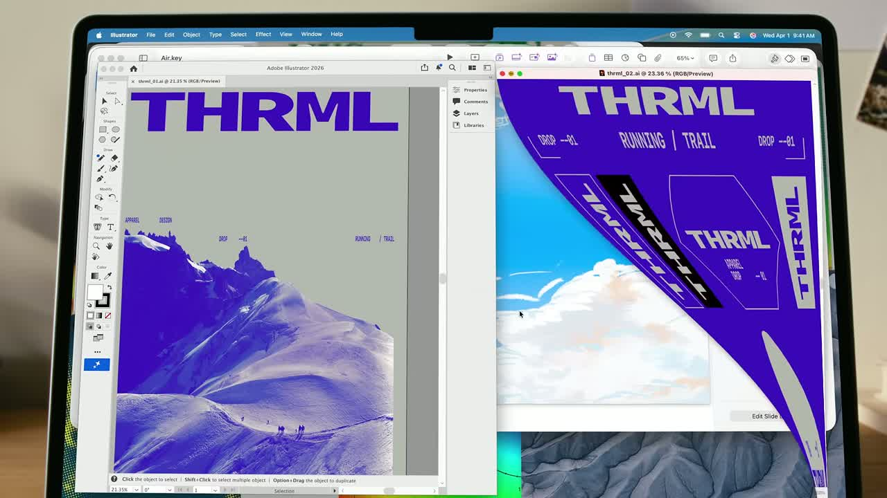
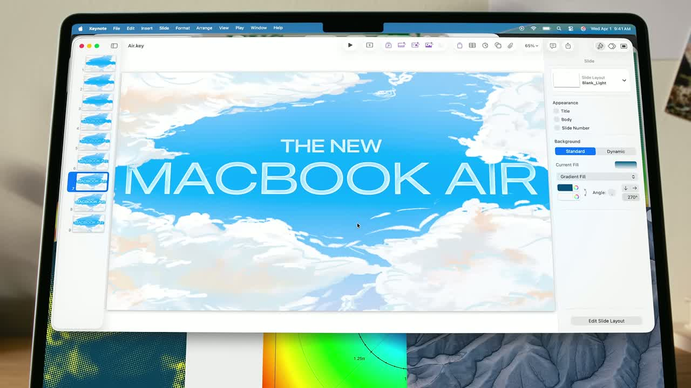
| 景別 | UI 滿版→中近景（拉回） |
|---|---|
| 構圖 | 由全螢幕內容拉回到筆電正面，螢幕置中 |
| 燈光／光線 | 螢幕高亮度＋背景暖光 |
| 產品出鏡 | 硬體約佔畫面 45%（螢幕＋邊框） |
| 運鏡（目視） | 拉出（pull-out）接 THE NEW MACBOOK AIR 螢幕字 |
| 運鏡（自動 v2） | static 平移 -0.01 · 俯仰 -0.01 · 縮放 -0.06 %/s · 內點率 0.79 |
| 量測 | 亮度 158.5 · 對比 RMS 74.5 · 色溫指標 8441K · 飽和 0.296 |
| 備註 | 本鏡 5.2 秒，內含合成轉場 |
| 景別 | 特寫（CU）手在觸控板 |
|---|---|
| 構圖 | 手由右上入鏡，觸控板置中偏下；淺景深 |
| 燈光／光線 | 暖色側光，金屬與木紋高光 |
| 產品出鏡 | 硬體約佔畫面 60%（觸控板＋鍵盤） |
| 運鏡（目視） | 手持微晃 |
| 運鏡（自動 v2） | n/a (too short / no features) |
| 量測 | 亮度 91.2 · 對比 RMS 51.9 · 色溫指標 3826K · 飽和 0.504 |
| 備註 | 0.3 秒呼吸點 |
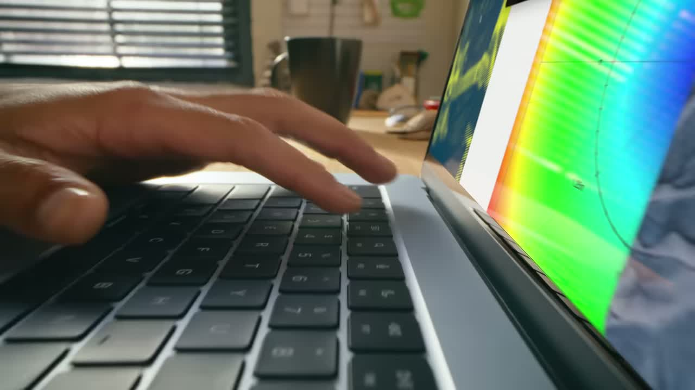
| 景別 | 特寫（CU）低角度 |
|---|---|
| 構圖 | 低機位，手與觸控板佔下半 |
| 燈光／光線 | 暖色側光，淺景深 |
| 產品出鏡 | 硬體約佔畫面 55%（觸控板＋鍵盤） |
| 運鏡（目視） | 固定 |
| 運鏡（自動 v2） | n/a (too short / no features) |
| 量測 | 亮度 105.1 · 對比 RMS 64.5 · 色溫指標 4759K · 飽和 0.426 |
| 備註 | 快剪特寫 |
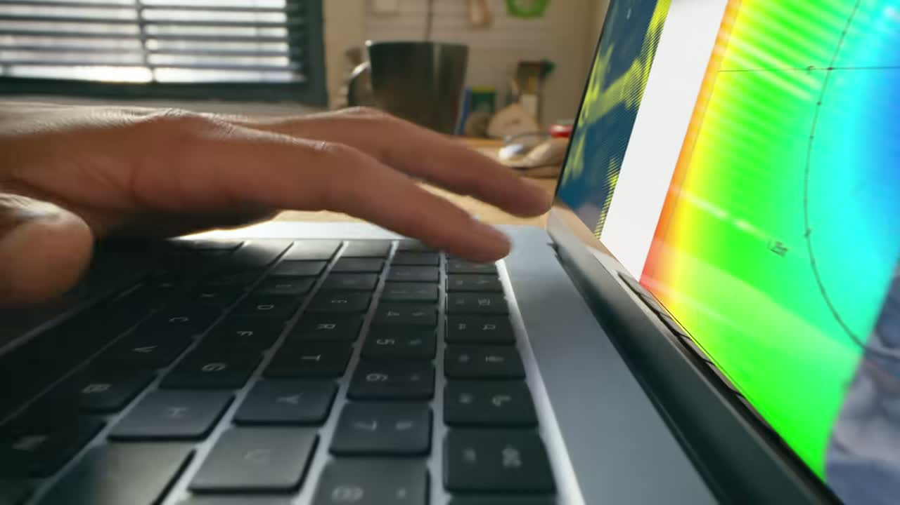
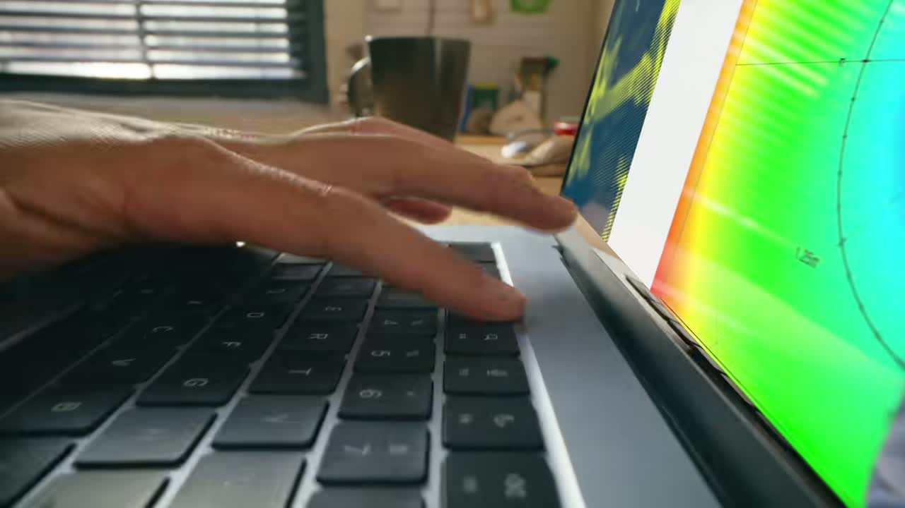
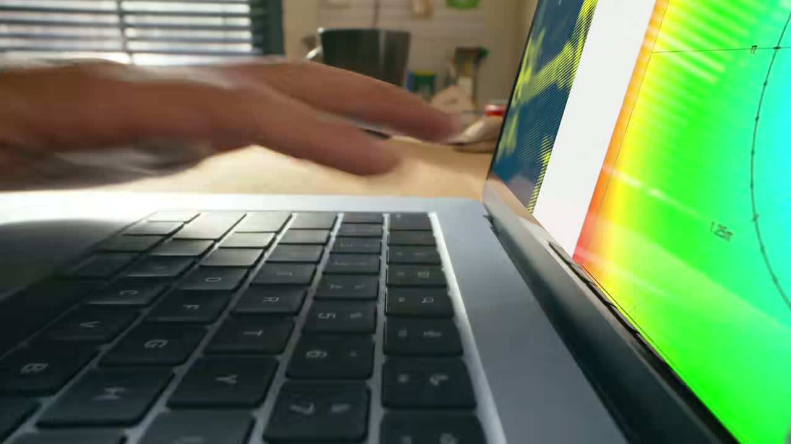
| 景別 | 特寫（CU）鍵盤＋螢幕邊 |
|---|---|
| 構圖 | 斜線；右側螢幕彩色內容入鏡 |
| 燈光／光線 | 暖光＋螢幕彩色漫射 |
| 產品出鏡 | 硬體約佔畫面 55%（鍵盤、觸控板、螢幕邊緣） |
| 運鏡（目視） | 輕微手持 |
| 運鏡（自動 v2） | unreliable (in-frame motion / CGI / UI dominates) 平移 -1.38 · 俯仰 2.39 · 縮放 18.35 %/s · 內點率 0.36 |
| 量測 | 亮度 108.9 · 對比 RMS 68.8 · 色溫指標 6254K · 飽和 0.409 |
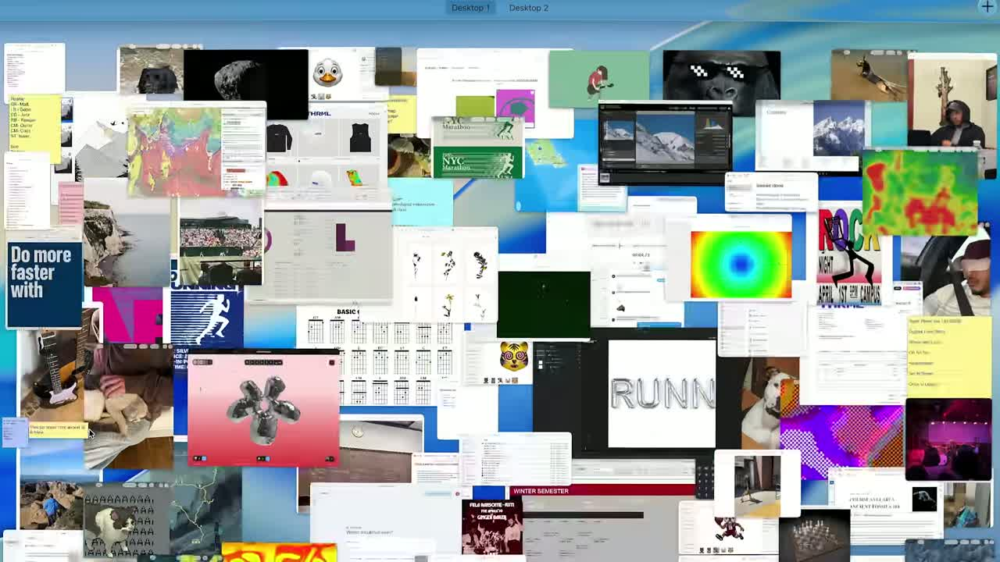
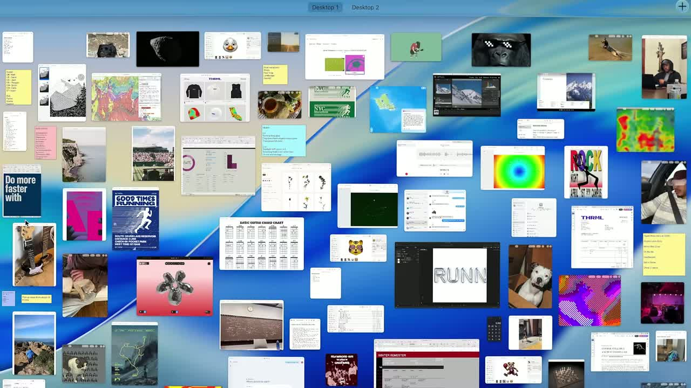
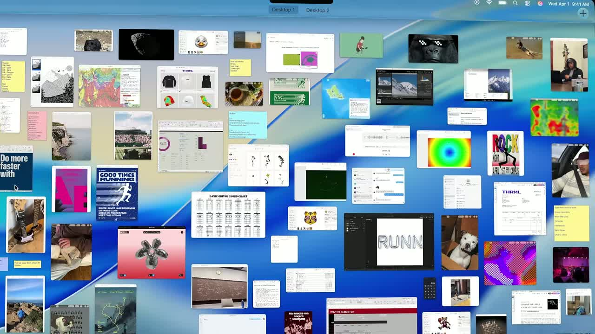
| 景別 | 螢幕滿版拼貼（UI） |
|---|---|
| 構圖 | 平面滿版；大量視窗碎片，由小到大 |
| 燈光／光線 | 螢幕（高飽和、高調） |
| 產品出鏡 | 無硬體出鏡（僅螢幕內容） |
| 運鏡（目視） | 虛擬（數位縮放） |
| 運鏡（自動 v2） | virtual（螢幕錄影／字卡／標誌，非實體鏡頭） 平移 0 · 俯仰 0.01 · 縮放 0.02 %/s · 內點率 0.84 |
| 量測 | 亮度 150.3 · 對比 RMS 68.2 · 色溫指標 10454K · 飽和 0.368 |
| 備註 | 展示多工量 |
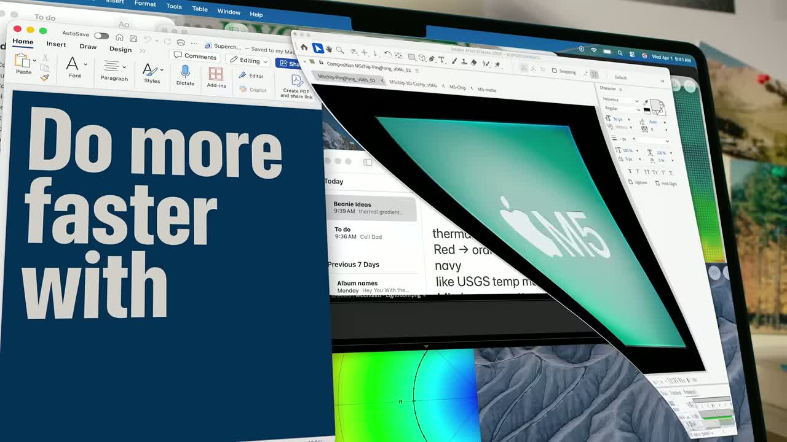
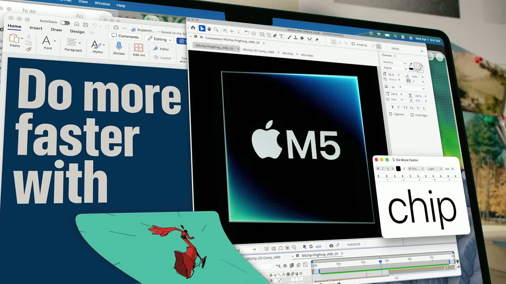
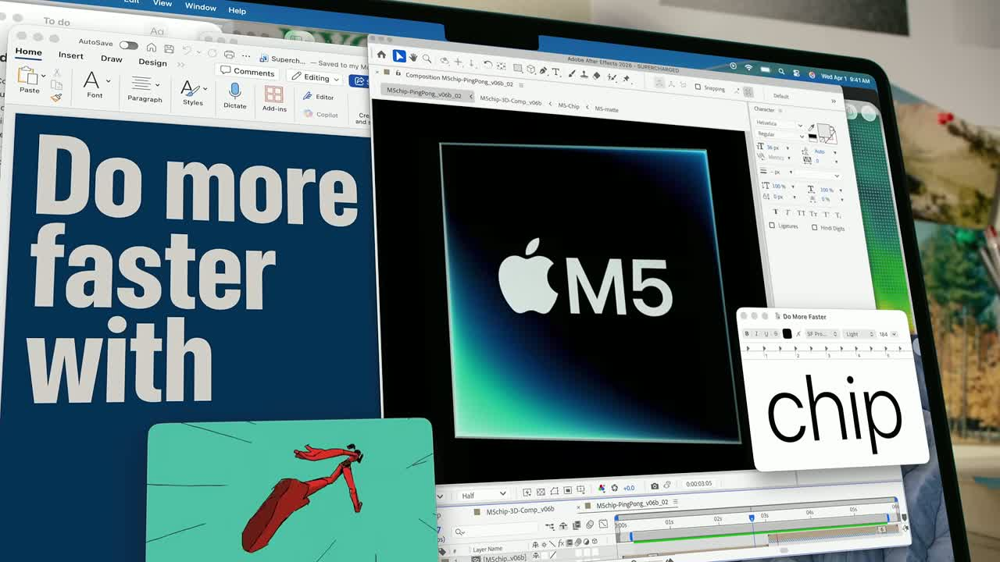
| 景別 | 近景（CU）筆電斜視＋字卡 |
|---|---|
| 構圖 | 螢幕上方邊框入鏡，字卡「Do more faster with M5 chip」左／晶片圖右，疊於實拍螢幕上 |
| 燈光／光線 | 背景暖色虛化＋螢幕發光 |
| 產品出鏡 | 硬體約佔畫面 20%（螢幕上緣） |
| 運鏡（目視） | 固定；字卡為動態圖形 |
| 運鏡（自動 v2） | static 平移 0 · 俯仰 0 · 縮放 0 %/s · 內點率 0.87 |
| 量測 | 亮度 116.1 · 對比 RMS 89.8 · 色溫指標 8465K · 飽和 0.385 |
| 備註 | 賣點 1：晶片 |
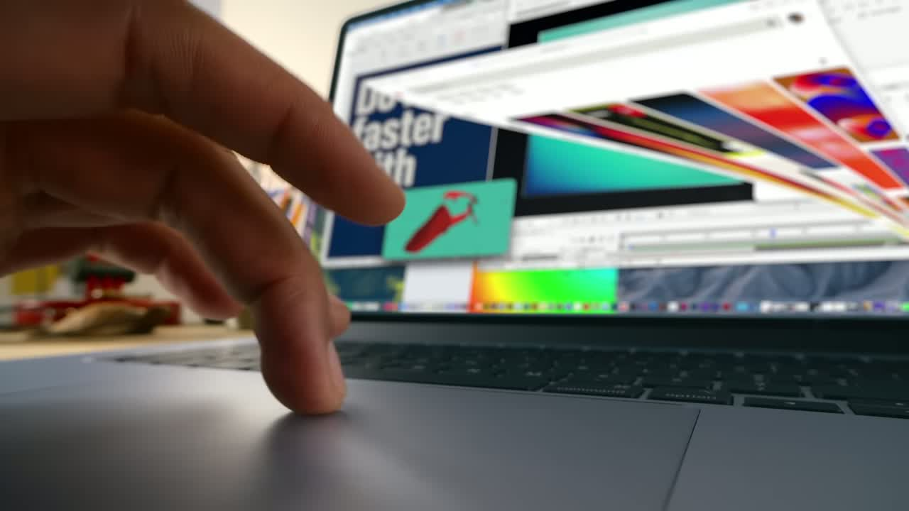
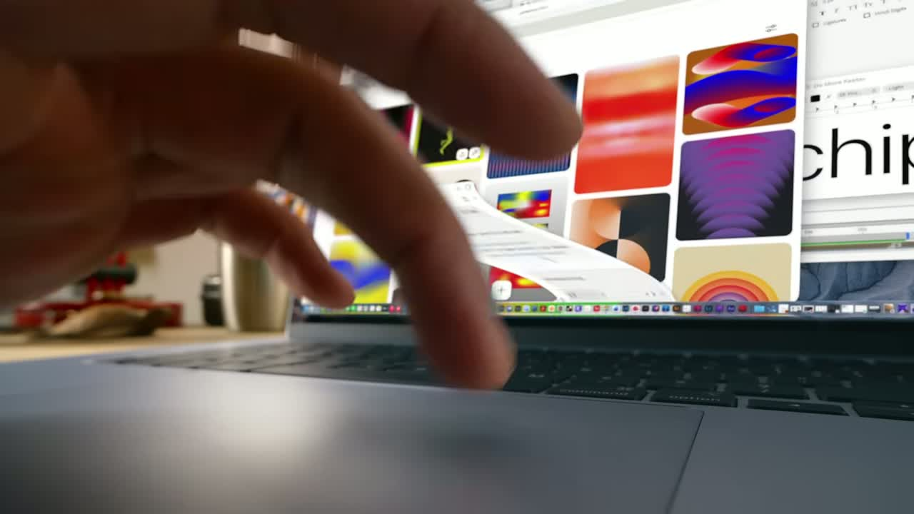
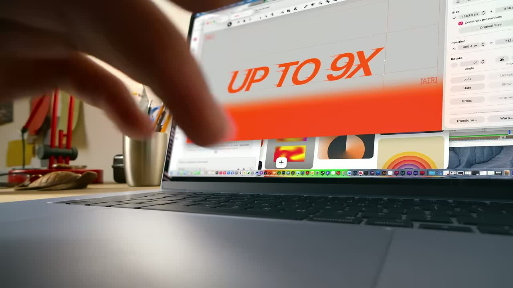
| 景別 | 特寫（CU）手＋虛化螢幕 |
|---|---|
| 構圖 | 手在前景實、後景螢幕虛；字卡由螢幕飛出 |
| 燈光／光線 | 暖色，淺景深 |
| 產品出鏡 | 硬體約佔畫面 35%（觸控板） |
| 運鏡（目視） | 焦點由手移到螢幕（rack focus） |
| 運鏡（自動 v2） | static 平移 0.14 · 俯仰 -0.06 · 縮放 0.29 %/s · 內點率 0.56 |
| 量測 | 亮度 103.3 · 對比 RMS 72.7 · 色溫指標 5010K · 飽和 0.392 |
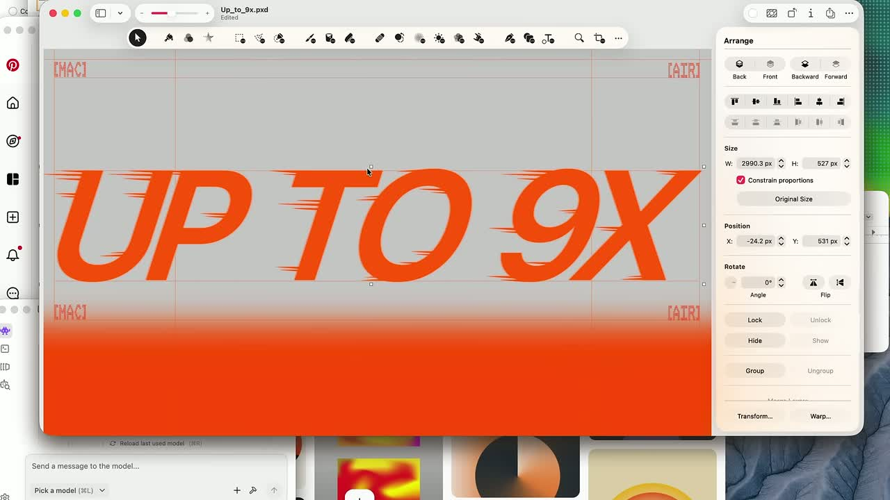
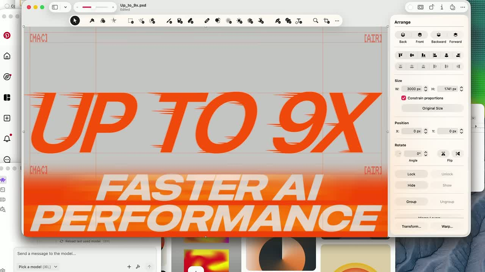
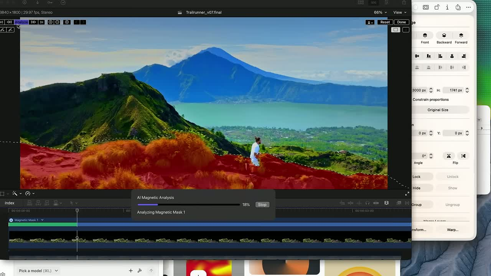
| 景別 | 螢幕滿版字卡（UI） |
|---|---|
| 構圖 | 橘白大字「UP TO 9X」置中，螢幕邊欄可見 |
| 燈光／光線 | 螢幕（高調、橘色強調） |
| 產品出鏡 | 無硬體出鏡（僅螢幕內容） |
| 運鏡（目視） | 虛擬 |
| 運鏡（自動 v2） | virtual（螢幕錄影／字卡／標誌，非實體鏡頭） 平移 0 · 俯仰 0 · 縮放 0 %/s · 內點率 0.89 |
| 量測 | 亮度 148.5 · 對比 RMS 60.7 · 色溫指標 4599K · 飽和 0.306 |
| 備註 | 賣點 1 數據 |
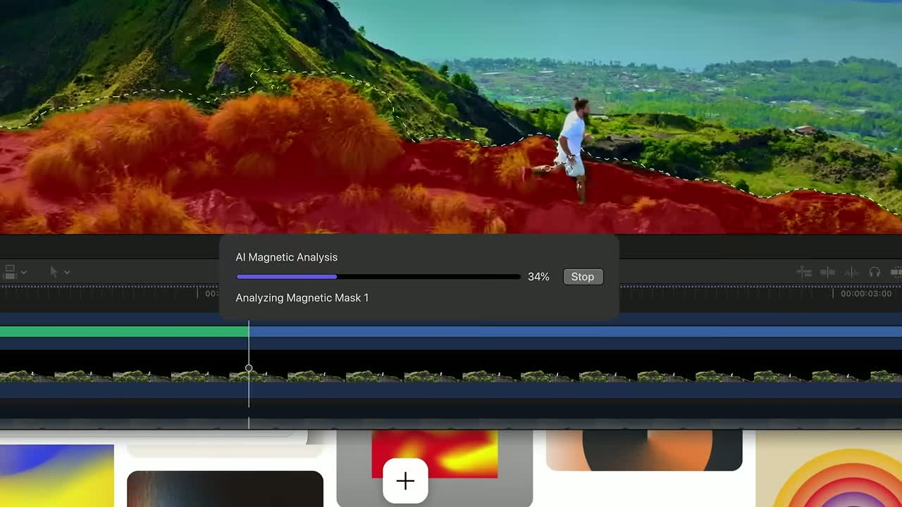
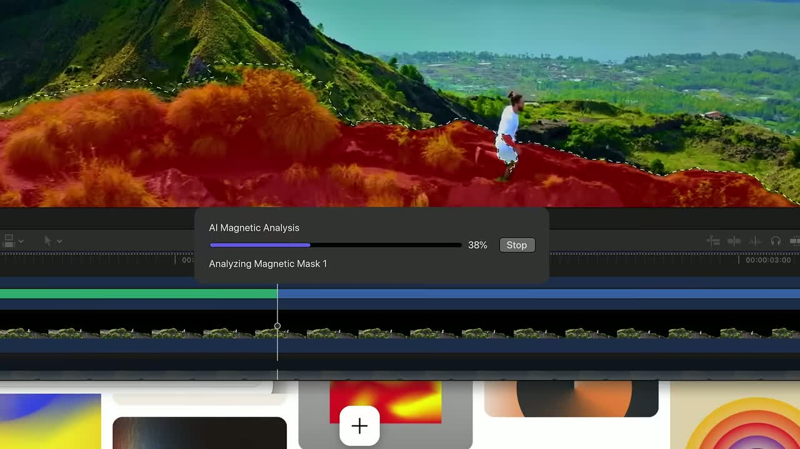
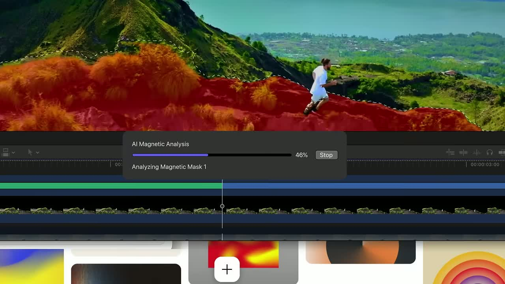
| 景別 | 螢幕滿版（UI） |
|---|---|
| 構圖 | 影片剪輯畫面，山景居上、時間軸居下 |
| 燈光／光線 | 螢幕（高飽和紅綠） |
| 產品出鏡 | 無硬體出鏡（僅螢幕內容） |
| 運鏡（目視） | 固定 |
| 運鏡（自動 v2） | virtual（螢幕錄影／字卡／標誌，非實體鏡頭） 平移 -0.24 · 俯仰 0.29 · 縮放 -0.22 %/s · 內點率 0.75 |
| 量測 | 亮度 73.2 · 對比 RMS 59 · 色溫指標 4998K · 飽和 0.489 |
| 備註 | 效能證據 |
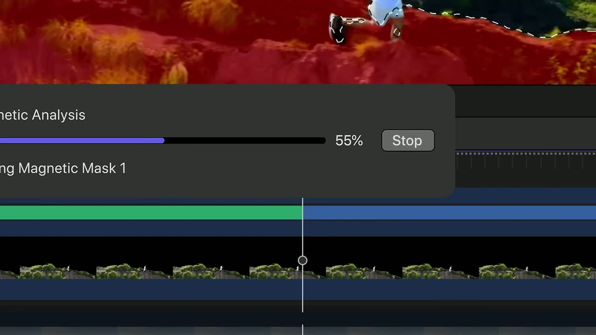
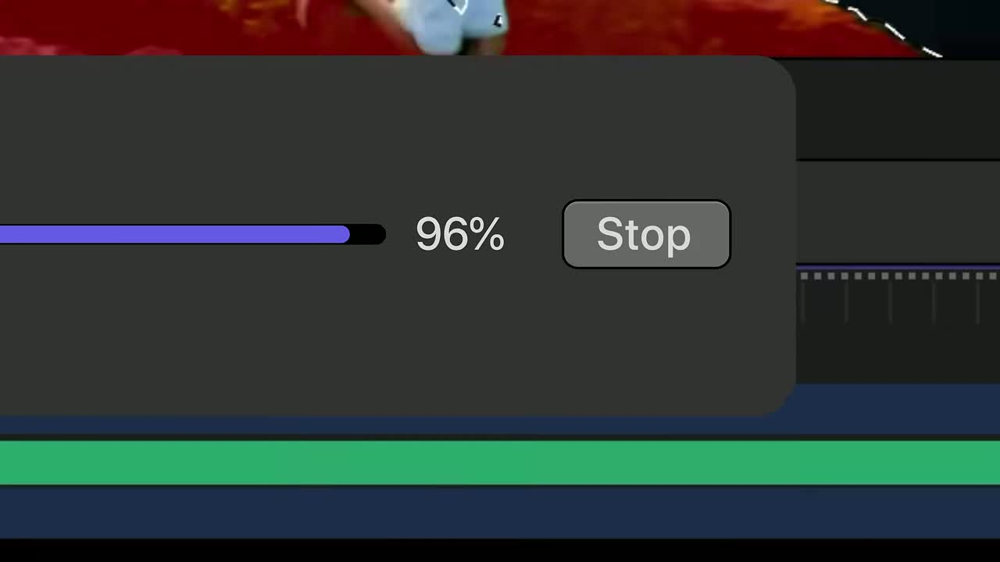
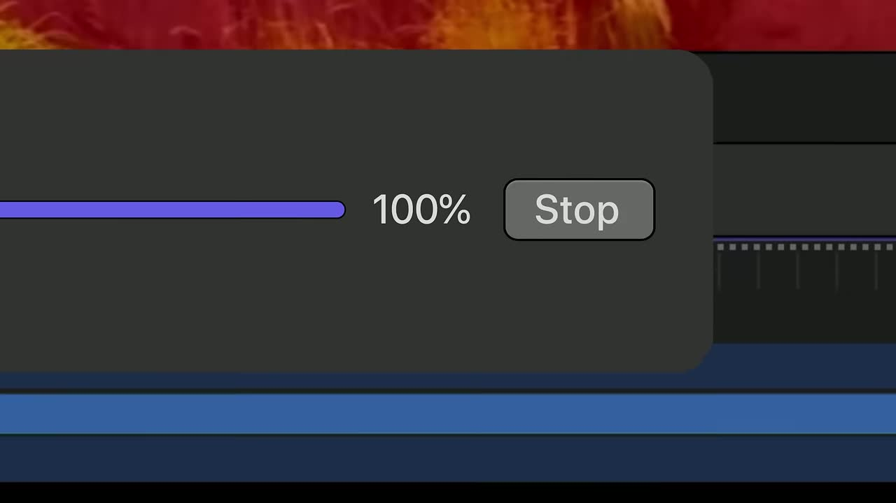
| 景別 | 螢幕滿版（UI） |
|---|---|
| 構圖 | 進度條 55%→100%，彈窗置中 |
| 燈光／光線 | 螢幕（暗色 UI） |
| 產品出鏡 | 無硬體出鏡（僅螢幕內容） |
| 運鏡（目視） | 固定 |
| 運鏡（自動 v2） | virtual（螢幕錄影／字卡／標誌，非實體鏡頭） 平移 -0.05 · 俯仰 0 · 縮放 -0.14 %/s · 內點率 0.69 |
| 量測 | 亮度 47.3 · 對比 RMS 27.8 · 色溫指標 7276K · 飽和 0.306 |
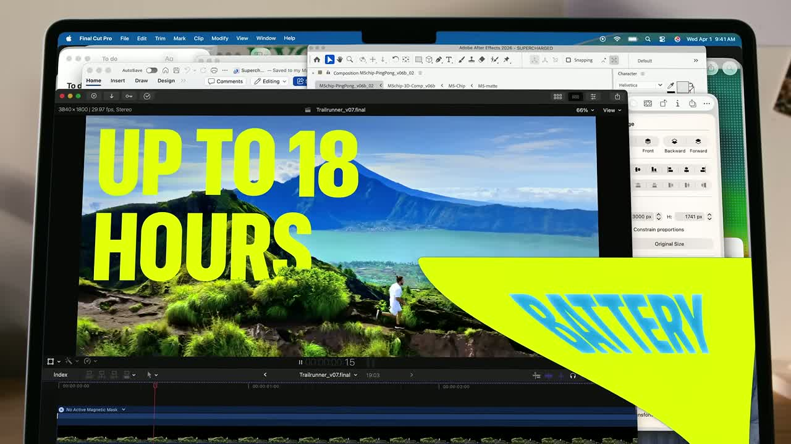
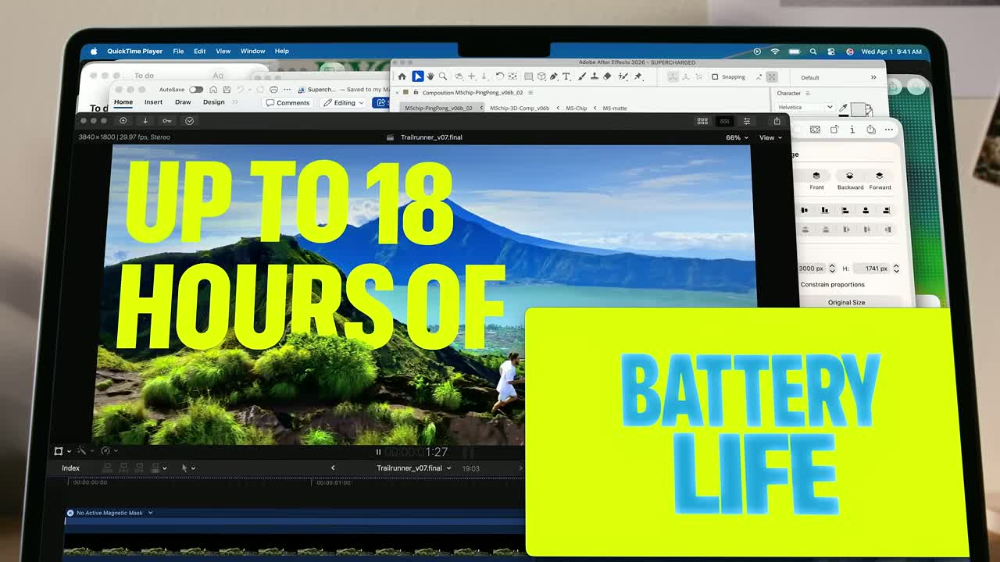
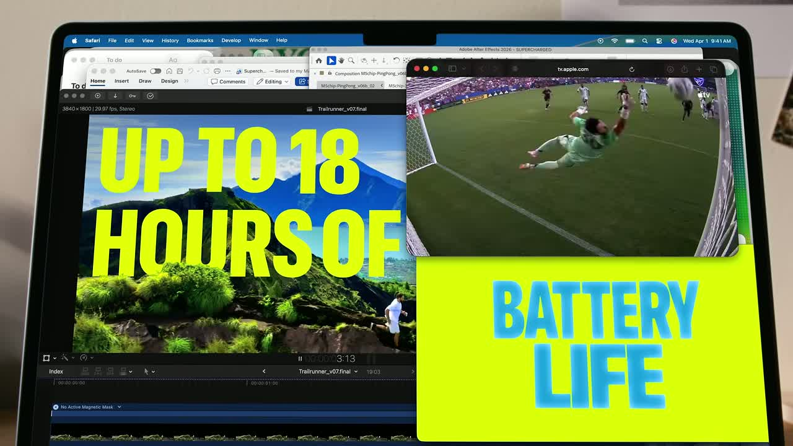
| 景別 | 近景（CU）筆電正面＋字卡 |
|---|---|
| 構圖 | 筆電螢幕佔滿畫面，螢幕邊框可見；字卡「UP TO 18 HOURS OF BATTERY LIFE」 |
| 燈光／光線 | 螢幕高亮＋背景暖光 |
| 產品出鏡 | 硬體約佔畫面 30%（螢幕＋邊框） |
| 運鏡（目視） | 固定 |
| 運鏡（自動 v2） | static 平移 -0.16 · 俯仰 -0.03 · 縮放 0.12 %/s · 內點率 0.8 |
| 量測 | 亮度 125.1 · 對比 RMS 85.5 · 色溫指標 5394K · 飽和 0.477 |
| 備註 | 賣點 2：電池 |
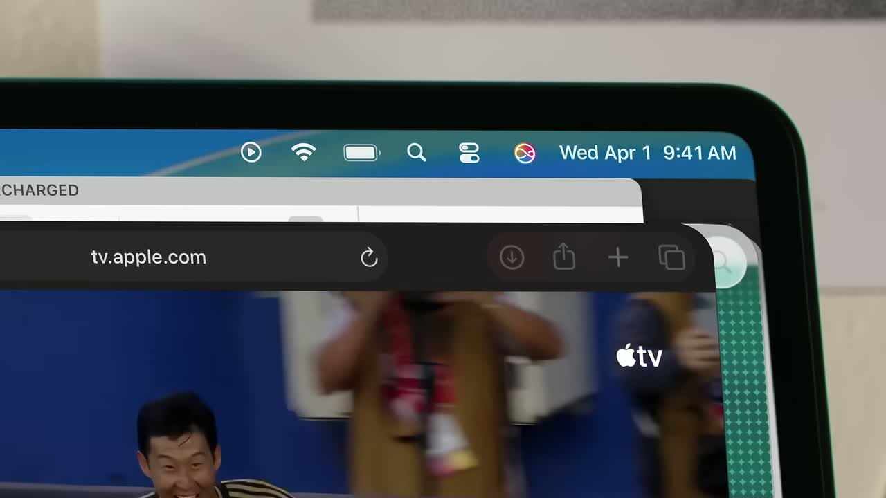
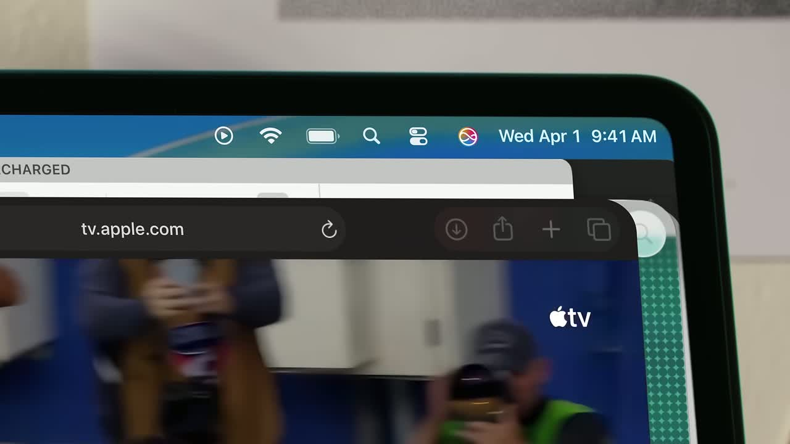
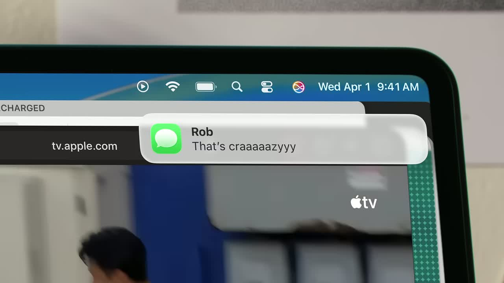
| 景別 | 特寫（CU）螢幕上緣 |
|---|---|
| 構圖 | Menu bar 在上方，tv.apple.com 影片 |
| 燈光／光線 | 螢幕、背景暖虛化 |
| 產品出鏡 | 硬體約佔畫面 20%（螢幕上緣） |
| 運鏡（目視） | 輕微手持 |
| 運鏡（自動 v2） | static 平移 -0.03 · 俯仰 -0.01 · 縮放 -0.1 %/s · 內點率 0.54 |
| 量測 | 亮度 95 · 對比 RMS 69.5 · 色溫指標 7397K · 飽和 0.317 |
| 備註 | 通知彈窗 |
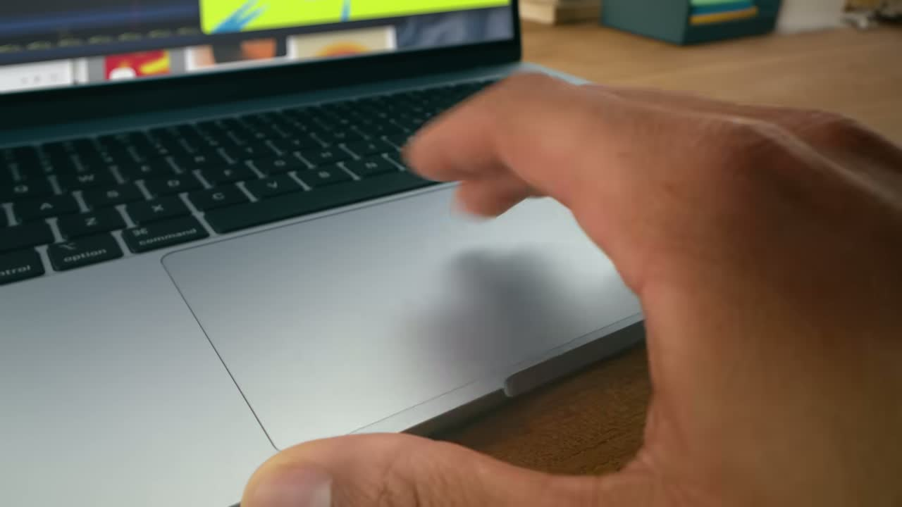
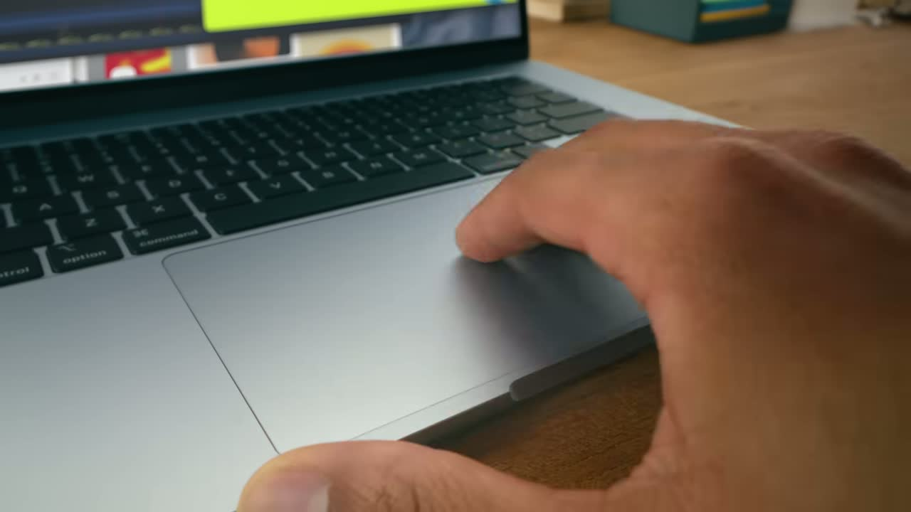
| 景別 | 特寫（CU）手在觸控板 |
|---|---|
| 構圖 | 手由右下入鏡，淺景深 |
| 燈光／光線 | 暖色側光 |
| 產品出鏡 | 硬體約佔畫面 55%（觸控板） |
| 運鏡（目視） | 固定 |
| 運鏡（自動 v2） | static 平移 1.16 · 俯仰 -1.13 · 縮放 4.4 %/s · 內點率 0.77 |
| 量測 | 亮度 96.5 · 對比 RMS 54.7 · 色溫指標 4887K · 飽和 0.433 |
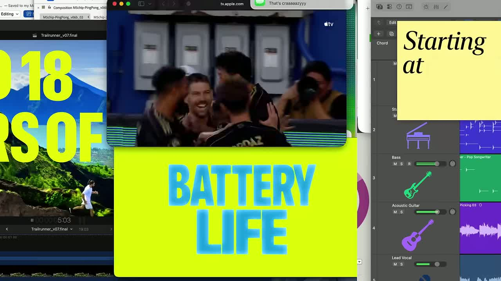
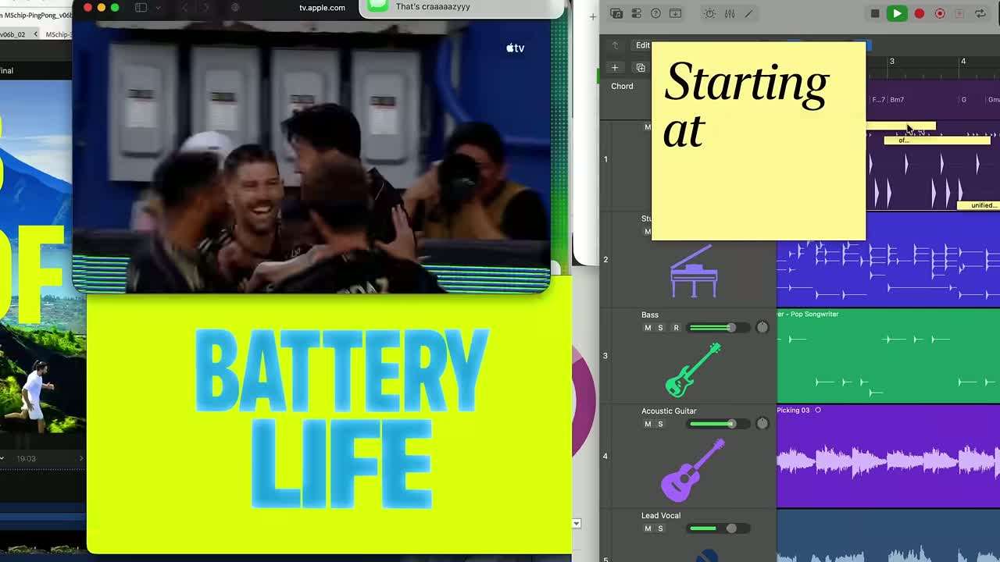
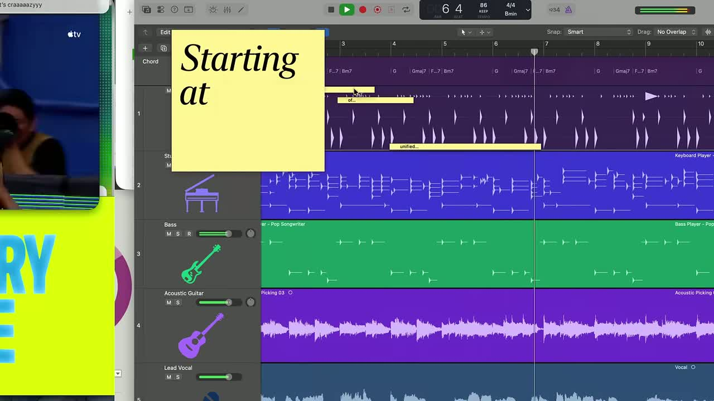
| 景別 | 螢幕滿版轉場（UI） |
|---|---|
| 構圖 | 電池字卡＋便利貼疊層 |
| 燈光／光線 | 螢幕 |
| 產品出鏡 | 無硬體出鏡（僅螢幕內容） |
| 運鏡（目視） | 虛擬 |
| 運鏡（自動 v2） | virtual（螢幕錄影／字卡／標誌，非實體鏡頭） |
| 量測 | 亮度 117.7 · 對比 RMS 81.2 · 色溫指標 5586K · 飽和 0.534 |
| 備註 | 0.3 秒轉場 |
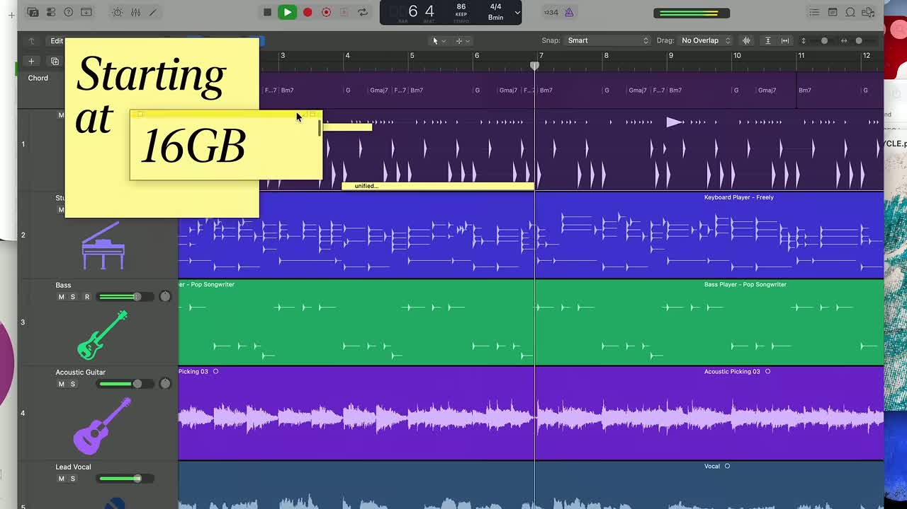
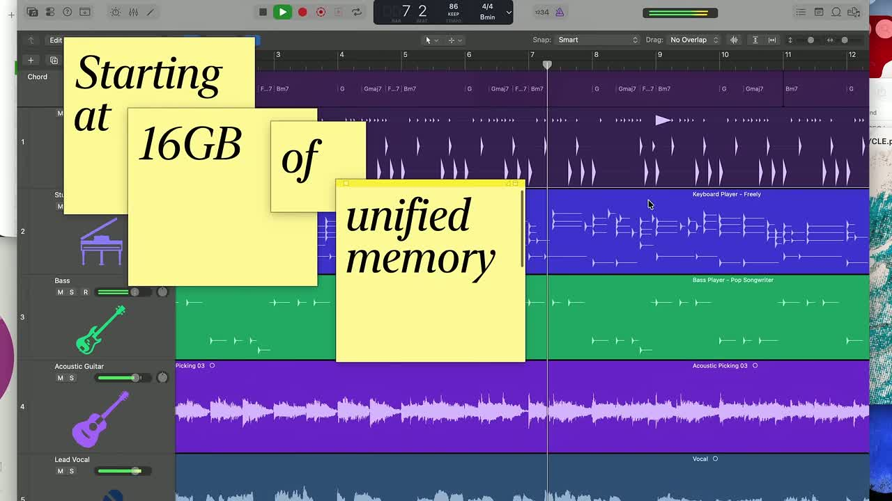
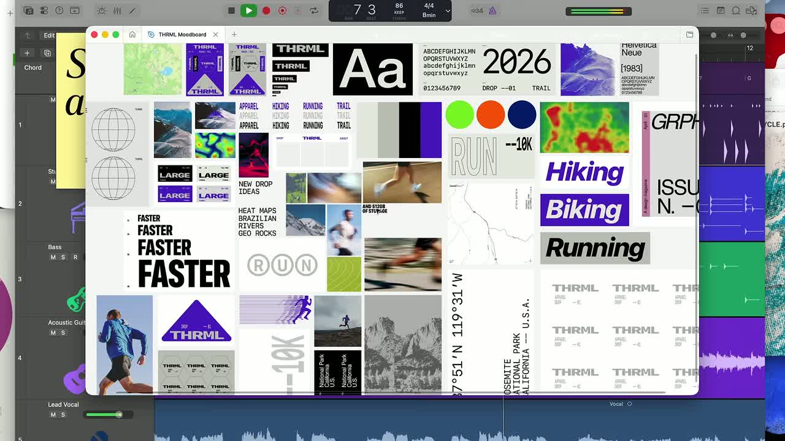
| 景別 | 螢幕滿版（UI） |
|---|---|
| 構圖 | 音樂製作 UI，便利貼逐字出現「Starting at 16GB of unified memory」 |
| 燈光／光線 | 螢幕（深紫色 UI） |
| 產品出鏡 | 無硬體出鏡（僅螢幕內容） |
| 運鏡（目視） | 虛擬 |
| 運鏡（自動 v2） | virtual（螢幕錄影／字卡／標誌，非實體鏡頭） 平移 0.01 · 俯仰 0 · 縮放 0.02 %/s · 內點率 0.89 |
| 量測 | 亮度 120.1 · 對比 RMS 68.6 · 色溫指標 8538K · 飽和 0.404 |
| 備註 | 賣點 3：記憶體 |
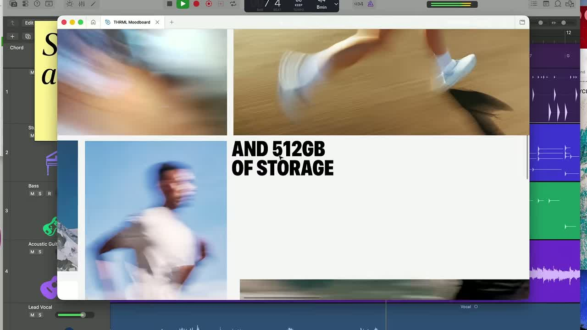
| 景別 | 平面字卡（Typography） |
|---|---|
| 構圖 | 白底黑色粗體「AND 512GB OF STORAGE」，由視窗擦除進入 |
| 燈光／光線 | 平面高調 |
| 產品出鏡 | 無硬體出鏡 |
| 運鏡（目視） | 虛擬（滑動擦除） |
| 運鏡（自動 v2） | virtual（螢幕錄影／字卡／標誌，非實體鏡頭） 平移 0.08 · 俯仰 1.32 · 縮放 29.44 %/s · 內點率 0.73 |
| 量測 | 亮度 156.3 · 對比 RMS 94.7 · 色溫指標 6020K · 飽和 0.139 |
| 備註 | 賣點 3：儲存 |
| 景別 | 字卡→特寫（CU）手 |
|---|---|
| 構圖 | 字卡滑出，露出手在觸控板 |
| 燈光／光線 | 暖色 |
| 產品出鏡 | 硬體約佔畫面 40%（觸控板（後半）） |
| 運鏡（目視） | 虛擬轉場後固定 |
| 運鏡（自動 v2） | pull-out/zoom-out + tilt down (fast) 平移 -17.65 · 俯仰 -46.98 · 縮放 -20.2 %/s · 內點率 0.58 |
| 量測 | 亮度 113.8 · 對比 RMS 65.6 · 色溫指標 5742K · 飽和 0.355 |
| 景別 | 平面字卡（Typography） |
|---|---|
| 構圖 | 白底、行事曆 UI→打字動畫「Great ideas start here」 |
| 燈光／光線 | 平面高調 |
| 產品出鏡 | 無硬體出鏡 |
| 運鏡（目視） | 虛擬 |
| 運鏡（自動 v2） | virtual（螢幕錄影／字卡／標誌，非實體鏡頭） 平移 -5.37 · 俯仰 0.33 · 縮放 -0.8 %/s · 內點率 0.82 |
| 量測 | 亮度 214.4 · 對比 RMS 60.6 · 色溫指標 6972K · 飽和 0.119 |
| 備註 | 品牌標語鋪陳 |
| 景別 | 極特寫（ECU）嘴部微笑 |
|---|---|
| 構圖 | 嘴部置中、貼臉裁切 |
| 燈光／光線 | 暖色柔光，淺景深 |
| 產品出鏡 | 無硬體出鏡 |
| 運鏡（目視） | 固定 |
| 運鏡（自動 v2） | static 平移 0.47 · 俯仰 0.92 · 縮放 0.99 %/s · 內點率 0.93 |
| 量測 | 亮度 65.2 · 對比 RMS 47.7 · 色溫指標 4242K · 飽和 0.459 |
| 備註 | 情緒收束 |
| 景別 | 俯拍中景（Overhead MS） |
|---|---|
| 構圖 | 筆電置中、雙手對稱；螢幕上緣露出標語 |
| 燈光／光線 | 暖色頂光＋木桌 |
| 產品出鏡 | 硬體約佔畫面 45%（鍵盤、觸控板、螢幕上緣） |
| 運鏡（目視） | 固定 |
| 運鏡（自動 v2） | static 平移 0 · 俯仰 -0.35 · 縮放 -1.11 %/s · 內點率 0.97 |
| 量測 | 亮度 93.4 · 對比 RMS 57.9 · 色溫指標 4302K · 飽和 0.465 |
| 備註 | 與第 1 鏡的俯視呼應 |
| 景別 | 平面字卡（Typography） |
|---|---|
| 構圖 | 超大字「…t ideas / …rt here」滿版，藍色選取框 |
| 燈光／光線 | 平面高調 |
| 產品出鏡 | 無硬體出鏡 |
| 運鏡（目視） | 虛擬（字卡放大） |
| 運鏡（自動 v2） | virtual（螢幕錄影／字卡／標誌，非實體鏡頭） 平移 0 · 俯仰 0 · 縮放 0 %/s · 內點率 0.99 |
| 量測 | 亮度 216.4 · 對比 RMS 76.1 · 色溫指標 7371K · 飽和 0.065 |
| 備註 | 標語 |
| 景別 | 廣角英雄（WS，CGI／合成） |
|---|---|
| 構圖 | 書桌場景，筆電偏左下→飛起離開畫面；文字「The new MacBook Air with M5」置中偏右；大量負空間 |
| 燈光／光線 | 暖色高調柔光，右前方主光，柔和落影（桌燈、牆面畫作） |
| 產品出鏡 | 硬體約佔畫面 8%（起始筆電在桌上，之後漂浮並離開） |
| 運鏡（目視） | 固定廣角；產品動畫 |
| 運鏡（自動 v2） | static 平移 0 · 俯仰 -0.05 · 縮放 0.04 %/s · 內點率 0.84 |
| 量測 | 亮度 118.3 · 對比 RMS 53.7 · 色溫指標 4646K · 飽和 0.297 |
| 備註 | 6.9 秒，為全片最長鏡頭；產品出鏡反而少 |
| 景別 | 黑底標誌 |
|---|---|
| 構圖 | 標誌置中偏上，下方法律小字 |
| 燈光／光線 | 純黑背景 |
| 產品出鏡 | 無硬體出鏡 |
| 運鏡（目視） | 固定 |
| 運鏡（自動 v2） | virtual（螢幕錄影／字卡／標誌，非實體鏡頭） 平移 0 · 俯仰 0 · 縮放 0 %/s · 內點率 1 |
| 量測 | 亮度 1.5 · 對比 RMS 15.3 · 色溫指標 6504K · 飽和 0 |
| 備註 | 結尾 5 秒 |
| 景別 | 中遠景英雄（MLS） |
|---|---|
| 構圖 | 筆電偏右（三分法），左側留白放字「NEW ASUS Zenbook DUO」；周圍浮動立方體 |
| 燈光／光線 | 深色漸層棚拍，上方柔光，地面鏡面反射，冷藍灰 |
| 產品出鏡 | 硬體約佔畫面 22%（上下雙螢幕展開的整機） |
| 運鏡（目視） | 固定（物件微動） |
| 運鏡（自動 v2） | pull-out/zoom-out 平移 0.61 · 俯仰 0.62 · 縮放 -9.43 %/s · 內點率 0.79 |
| 量測 | 亮度 75.8 · 對比 RMS 48.5 · 色溫指標 6975K · 飽和 0.179 |
| 備註 | 開場即亮產品 |
| 景別 | 俯拍（Overhead）合蓋機身 |
|---|---|
| 構圖 | 機身置中，垂直→斜角旋轉 |
| 燈光／光線 | 灰藍漸層、柔光、機身邊緣細亮線 |
| 產品出鏡 | 硬體約佔畫面 14%（機蓋（合蓋）） |
| 運鏡（目視） | CGI 虛擬運鏡＋物件旋轉 |
| 運鏡（自動 v2） | static 平移 -0.12 · 俯仰 0.12 · 縮放 1.35 %/s · 內點率 0.69 |
| 量測 | 亮度 89.9 · 對比 RMS 45.1 · 色溫指標 10577K · 飽和 0.281 |
| 備註 | 標題字「Ceraluminum Chassis」在鏡尾出現 |
| 景別 | 中近景（斜俯）機身 |
|---|---|
| 構圖 | 機身佔畫面 1/3，斜角；字置左下 |
| 燈光／光線 | 冷色漸層、邊緣光勾勒 |
| 產品出鏡 | 硬體約佔畫面 35%（機蓋、邊緣） |
| 運鏡（目視） | CGI 旋轉 |
| 運鏡（自動 v2） | static 平移 0.17 · 俯仰 0.52 · 縮放 1.23 %/s · 內點率 0.54 |
| 量測 | 亮度 109.8 · 對比 RMS 53.7 · 色溫指標 9820K · 飽和 0.257 |
| 備註 | 0.7 秒材質展示 |
| 景別 | 近景→側視（透明線框） |
|---|---|
| 構圖 | 透明鉸鏈 V 形置中→側面平躺、置中偏下 |
| 燈光／光線 | 冷色漸層、透明材質高光 |
| 產品出鏡 | 硬體約佔畫面 35%（鉸鏈、整機側面） |
| 運鏡（目視） | CGI 拉出／旋轉 |
| 運鏡（自動 v2） | pull-out/zoom-out 平移 -0.34 · 俯仰 0.74 · 縮放 -52.34 %/s · 內點率 0.58 |
| 量測 | 亮度 90.8 · 對比 RMS 46.3 · 色溫指標 11098K · 飽和 0.28 |
| 備註 | 賣點：鉸鏈 |
| 景別 | 平面字卡（Typography） |
|---|---|
| 構圖 | 黃綠色粗體「IMMERSIVE」→「More IMMERSIVE」置中，漸層背景 |
| 燈光／光線 | 平面、冷色漸層 |
| 產品出鏡 | 無硬體出鏡 |
| 運鏡（目視） | 虛擬（字動畫） |
| 運鏡（自動 v2） | virtual（螢幕錄影／字卡／標誌，非實體鏡頭） 平移 0.03 · 俯仰 -0.02 · 縮放 -8.03 %/s · 內點率 0.9 |
| 量測 | 亮度 99.3 · 對比 RMS 46.2 · 色溫指標 10840K · 飽和 0.379 |
| 備註 | 賣點標題 |
| 景別 | 中景（舞台式） |
|---|---|
| 構圖 | 筆電輪廓置中，螢幕滿版彩色粒子畫面；說明字置中偏下 |
| 燈光／光線 | 暗場＋自發光，高飽和、地面反射 |
| 產品出鏡 | 硬體約佔畫面 30%（雙螢幕（螢幕發光為主）） |
| 運鏡（目視） | CGI 推近 |
| 運鏡（自動 v2） | unreliable (in-frame motion / CGI / UI dominates) 平移 2.08 · 俯仰 3.55 · 縮放 -2.2 %/s · 內點率 0.39 |
| 量測 | 亮度 53.5 · 對比 RMS 39.4 · 色溫指標 6638K · 飽和 0.482 |
| 備註 | 賣點：螢幕／6 喇叭音效 |
| 景別 | 平面字卡（Typography） |
|---|---|
| 構圖 | 黃綠色粗體「PERFORMANCE Leap」置中 |
| 燈光／光線 | 平面、冷色漸層 |
| 產品出鏡 | 無硬體出鏡 |
| 運鏡（目視） | 虛擬（字動畫） |
| 運鏡（自動 v2） | virtual（螢幕錄影／字卡／標誌，非實體鏡頭） 平移 -0.06 · 俯仰 -0.03 · 縮放 -7.82 %/s · 內點率 0.93 |
| 量測 | 亮度 98.1 · 對比 RMS 50.5 · 色溫指標 10696K · 飽和 0.374 |
| 備註 | 賣點標題 |
| 景別 | 爆炸圖（CGI） |
|---|---|
| 構圖 | 內部零件散開置中，字置中偏下 |
| 燈光／光線 | 暗藍灰、透明線框光 |
| 產品出鏡 | 硬體約佔畫面 60%（內部零件（電池）） |
| 運鏡（目視） | CGI 旋轉／推近 |
| 運鏡（自動 v2） | push-in/zoom-in 平移 -0.1 · 俯仰 -0.26 · 縮放 22.52 %/s · 內點率 0.77 |
| 量測 | 亮度 49.6 · 對比 RMS 38.3 · 色溫指標 11436K · 飽和 0.396 |
| 備註 | 賣點：雙電池 |
| 景別 | 微距（CGI）風扇 |
|---|---|
| 構圖 | 風扇偏左、斜向金屬面右側 |
| 燈光／光線 | 暗色金屬、冷色背光＋橘色點綴 |
| 產品出鏡 | 硬體約佔畫面 70%（內部散熱風扇） |
| 運鏡（目視） | 近乎固定，風扇旋轉 |
| 運鏡（自動 v2） | static 平移 0.16 · 俯仰 0.46 · 縮放 1.83 %/s · 內點率 0.77 |
| 量測 | 亮度 46.3 · 對比 RMS 34.8 · 色溫指標 7175K · 飽和 0.075 |
| 備註 | 賣點：散熱 |
| 景別 | 中景＋字動畫 |
|---|---|
| 構圖 | 螢幕內容由 CREATE→WORK→GAME 切換（鏡內約 3 個子場景，自動切鏡未偵測） |
| 燈光／光線 | 暗場，螢幕自發光；字為洋紅／紫 |
| 產品出鏡 | 硬體約佔畫面 45%（雙螢幕、鍵盤） |
| 運鏡（目視） | 固定→輕微傾斜 |
| 運鏡（自動 v2） | pull-out/zoom-out 平移 -0.13 · 俯仰 -0.46 · 縮放 -22.82 %/s · 內點率 0.66 |
| 量測 | 亮度 31.3 · 對比 RMS 40.1 · 色溫指標 9728K · 飽和 0.203 |
| 備註 | 4 秒內含 3 個子場景；Intel 標示置右下 |
| 景別 | 中近景（斜角 3/4） |
|---|---|
| 構圖 | 筆電在暗場，由左下進、右側另有雙螢幕筆電（鏡內多構圖） |
| 燈光／光線 | 暗場、左側聚光漸層、螢幕色彩為主光 |
| 產品出鏡 | 硬體約佔畫面 40%（整機（雙螢幕／單螢幕）） |
| 運鏡（目視） | CGI 平移／環繞 |
| 運鏡（自動 v2） | pull-out/zoom-out + pan left (fast) + roll 平移 64.19 · 俯仰 -26.98 · 縮放 -38 %/s · 內點率 0.7 |
| 量測 | 亮度 35.4 · 對比 RMS 46.4 · 色溫指標 6766K · 飽和 0.392 |
| 備註 | 鏡內多個構圖，未被自動切開 |
| 景別 | 中遠景英雄（MLS） |
|---|---|
| 構圖 | 與第 1 鏡同構圖：筆電偏右、左側字「ASUS Zenbook DUO Let's DUO it」；下方法律小字 |
| 燈光／光線 | 深色漸層、地面反射 |
| 產品出鏡 | 硬體約佔畫面 20%（雙螢幕整機） |
| 運鏡（目視） | 固定 |
| 運鏡（自動 v2） | static 平移 0.27 · 俯仰 0.35 · 縮放 -1.67 %/s · 內點率 0.78 |
| 量測 | 亮度 76 · 對比 RMS 48.3 · 色溫指標 7082K · 飽和 0.185 |
| 備註 | 首尾呼應 |
| 景別 | 黑底標誌動畫 |
|---|---|
| 構圖 | ASUS 鍍鉻標誌置中，聚光灯由上打下，後轉為藍色立方體隧道 |
| 燈光／光線 | 純黑＋單一聚光 |
| 產品出鏡 | 無硬體出鏡 |
| 運鏡（目視） | 虛擬（標誌動畫） |
| 運鏡（自動 v2） | virtual（螢幕錄影／字卡／標誌，非實體鏡頭） 平移 0.07 · 俯仰 -2.94 · 縮放 -36.4 %/s · 內點率 0.71 |
| 量測 | 亮度 16.6 · 對比 RMS 27.4 · 色溫指標 6905K · 飽和 0.276 |
| 備註 | 含轉場，鏡內有子場景 |
| 景別 | 標誌（Intel） |
|---|---|
| 構圖 | Intel Core Ultra 標章置中，藍色背景 |
| 燈光／光線 | 藍色高對比 |
| 產品出鏡 | 無硬體出鏡 |
| 運鏡（目視） | 固定 |
| 運鏡（自動 v2） | virtual（螢幕錄影／字卡／標誌，非實體鏡頭） 平移 0 · 俯仰 0 · 縮放 -0.13 %/s · 內點率 0.79 |
| 量測 | 亮度 41.6 · 對比 RMS 40.5 · 色溫指標 2300K · 飽和 0.877 |
| 備註 | 合作品牌收尾 |